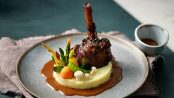

Home
Lamb Shank

Description
Lamb shanks braised in red wine with fresh rosemary, garlic, and tomatoes. Excellent served with polenta or roasted garlic mashed potatoes, my family's favorite, to soak up the wonderful sauce. This is a fantastic dish to make for company, as all the prep work is done at the beginning. All you have to do is wait!
Ingredients
- Lamb Shanks
- Seasonings
- Olive Oil
- Vegetables
- Red Wine
- Broth
Steps
- Cook the lamb shanks in oil until they are brown on all sides.
- Add vegetables to the pot and fry. Stir in the remaining ingredients.
- Return the shanks to the pot, bring to a boil, cover, and simmer until the meat is tender.
- Uncover the pot and simmer for about 20 minutes, then remove the shanks.
- Boil the sauce until thick, then spoon it over the lamb shanks to serve.